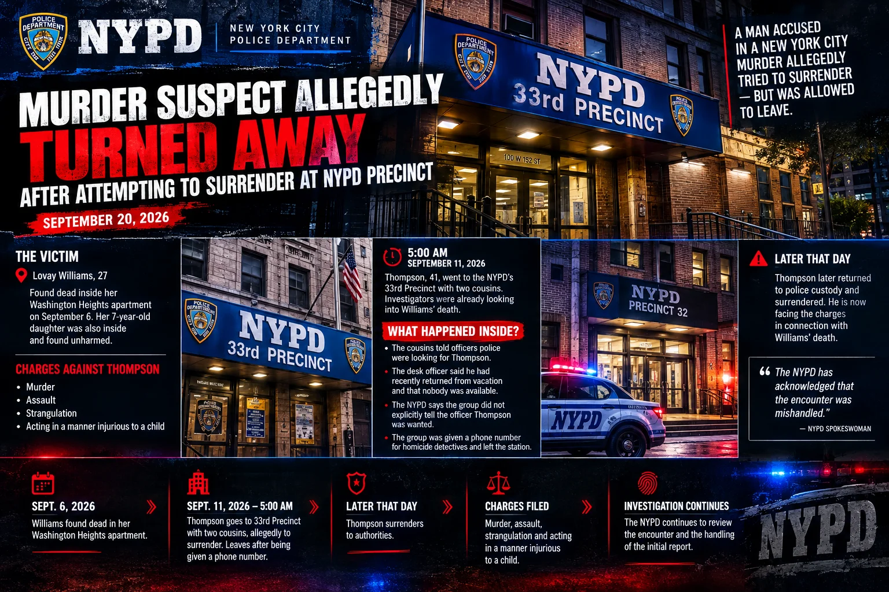

Murder Suspect Allegedly Turned Away After Attempting to Surrender at NYPD Precinct
National | Crime
Published: September 19, 2026

NEW YORK — Questions are being raised about how an early-morning encounter at a New York City police station was handled after a man accused in the killing of a 27-year-old woman allegedly attempted to surrender to police but was allowed to leave.
Tiliek Shamel Thompson, 41, is accused in the death of Lovay Williams, who was found dead inside her Washington Heights apartment on September 6. Authorities later charged Thompson with murder, assault, strangulation and acting in a manner injurious to a child.
According to reports from The Independent and the New York Post, Thompson went to the NYPD’s 33rd Precinct around 5 a.m. on September 11 accompanied by two cousins. At the time, investigators were looking into Williams’ death.
Disagreement Over What Happened Inside the Precinct
Thompson’s attorney, Neville Onielle Dexter Mitchell, told the New York Post that the cousins informed officers that police were looking for Thompson.
Mitchell said the desk officer responded that he had recently returned from vacation and that nobody was available.
The NYPD offered a different account after reviewing audio and video from the encounter.
According to an NYPD spokeswoman cited by the Post, the group did not explicitly tell the officer that Thompson was wanted by investigators. Instead, the officer reportedly believed the three men were relatives of Williams and passed that information along to a supervisor.
The spokeswoman also said the officer’s comment about returning from vacation referred to the fact that he had been away when Williams was killed.
The group was subsequently given a telephone number for homicide detectives and left the station.
Thompson Later Surrendered
Thompson was identified by police sources as a person of interest in the investigation. He later returned to police custody and successfully surrendered.
Authorities subsequently charged him in connection with Williams’ death.
Williams was discovered inside her apartment on West 156th Street with injuries to her face and neck, according to reports. Her 7-year-old daughter was also inside the apartment and was found unharmed.
Relatives told the New York Post that Williams and Thompson had been in a relationship.
Police Officers Question the Response
The handling of the initial encounter has prompted criticism from current and former NYPD personnel quoted by the Post.
One senior officer told the newspaper that officers should have investigated further if Thompson indicated he was there to surrender.
Former NYPD Detective Michael Alcazar similarly told the Post that detectives working the overnight shift, known as the “nightwatch,” could have been contacted.
The criticism centers on whether Thompson should have remained at the precinct while homicide investigators were contacted rather than being permitted to leave.
The NYPD has acknowledged that the encounter was mishandled, according to the New York Post.
Investigation Continues
The incident occurred as the NYPD continues efforts to increase the size of its police force. The New York Post reported that the department hired 4,056 officers during 2025, its largest annual recruitment total, while also lowering certain educational requirements for applicants.
Thompson now faces the criminal charges connected to Williams’ death. The allegations against him remain accusations unless and until established in court.
The Independent reported that it contacted the NYPD for comment.